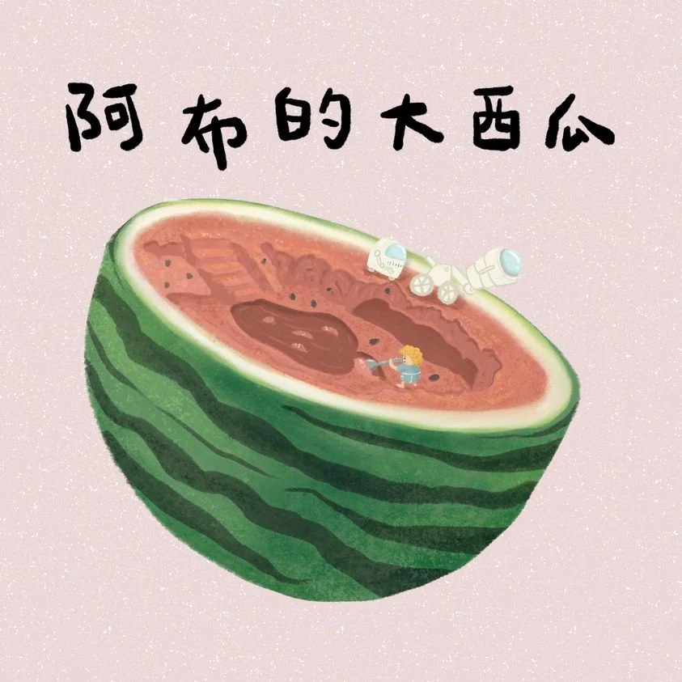

完整版廣播劇，含配音與音效，供角色聲音表情參考。
在遙遠的外太空，有一個很像地球的小星球，住著外星人小朋友阿布。他最愛用超大望遠鏡觀察宇宙，這天他看到地球上的小朋友在吃一種奇怪的食物：紅色的三角形、綠色的「把手」，還會吐出黑黑的東西——機器人助手 AB750 查了資料：那叫做西瓜。
「又甜又清爽，充滿瓜果的香氣」，光聽描述就讓阿布想到睡不著。凌晨三點，他決定動用一年只能使用一次的「宇宙高能量子傳輸器」把西瓜傳過來——偏偏按下按鈕的瞬間，地球小朋友「呸」地吐出一顆籽，傳到手上的只有一粒西瓜籽。
還好有籽就能種！阿布每天頂著大太陽照顧西瓜，卻一直納悶：怎麼只長綠色圓圓的，不長成紅色三角形？直到西瓜長到三層樓高，AB750 才查到「西瓜是圓形的，可以切成各種形狀食用」。阿布用電鋸在瓜皮上開了一扇門，一頭埋進紅色果肉裡——從此他吃出隧道、房間和西瓜汁游泳池，把床、書桌、望遠鏡通通搬進西瓜房子。故事的結尾，他從天窗用望遠鏡看到地球小朋友在吃黃黃軟軟的芒果……「我要吃芒果！！！」
哈囉，我們來一起說故事囉！今天要說的故事叫做《阿布的大西瓜》，改編自阿布提供的故事。
在遙遠的外太空中，有一個很像地球的小星球，那個星球上住著一個外星人小朋友，他叫做阿布。阿布最喜歡用望遠鏡觀察外太空了，他的望遠鏡很大很大、很長很長，可以看到很遠很遠的地方，像是——
阿布：喔！地球！
阿布今天用望遠鏡看到地球了。
阿布：聽說地球上面有很多人和動物，我想看清楚一點，AB750，請幫我放大畫面！
AB750：沒問題，立刻進行高解析化作業。
AB750是阿布的機器人，他很聰明，知道所有的事情，是阿布的好幫手。
AB750：高解析化作業完成。
阿布：哇！！真的有好多小朋友耶！嗯？？他們在吃什麼？
AB750幫忙放大畫面，阿布看到——
阿布：真奇怪的食物，紅色的三角形，下面有寬寬扁扁的綠色把手，拿著把手吃，是還滿方便的⋯⋯可是⋯⋯紅色的部分，有水流出來、滴到手上了啊！！等一下！！為什麼他吐出黑色的東西！！呃～～～
阿布沒看過地球的食物，他非常緊張。AB750查到資料，告訴阿布
AB750：他們正在吃西瓜。
阿布：西瓜？
AB750：沒錯，西瓜。那是一種水果，是植物的果實，綠色的不是把手，是果皮，紅色的是果肉，黑黑的是種子。
阿布的臉都皺起來了。
阿布：我覺得聽起來不是很好吃⋯⋯
AB750：我查到的資料顯示「西瓜甜甜的，充滿水份，夏天的時候最好吃。」
阿布：這樣啊⋯⋯
那天晚上，阿布翻來翻去，就是睡不著。（阿布輾轉難眠聲）
阿布只要把眼睛閉上，就會在頭腦裡面想起三角形的西瓜，紅紅的果肉、綠綠的果皮還有黑黑的種子。西瓜好像很好咬、很多汁，但是看起來又不像軟綿綿的東西，到底吃西瓜是什麼感覺呢⋯⋯
阿布：我好想吃西瓜！！！！
阿布忍不住跳下床，把AB750吵醒了。
AB750：阿布早安⋯⋯不對，現在才凌晨三點，該說早安，還是晚安⋯⋯早安？晚安？
（機器逼哩逼哩高科技運算的聲音）
阿布：那不重要，重點是，我好想吃西瓜！我想西瓜想到睡不著覺！西瓜到底是什麼味道？
AB750：我查到的資料顯示「西瓜充滿水份，又甜又清爽，充滿瓜果的香氣。」
阿布：清爽是什麼意思？瓜果的香氣又是什麼？我好想知道～～～
AB750：那就使用宇宙高能量子傳輸器吧！
宇宙高能量子傳輸器是一種很厲害的機器，只要用機器瞄準想要的東西，那個東西就會從很遠很遠的地方傳送到阿布的手上。因為這個厲害的宇宙高能量子傳輸器會消耗非常多能源，所以一年只能用一次。
阿布：（天人交戰）嗯～～～～～好吧！就用宇宙高能量子傳輸器把西瓜傳輸過來！
AB750打開宇宙高能量子傳輸器（高科技東西開機的音效），對準了小朋友手上三角形的西瓜。
阿布：準備好吧！！西瓜！！
阿布看到畫面中的西瓜開始震動，宇宙高能量子傳輸器瞄準好了！
阿布：AB750，按下傳輸按鈕！
AB750：遵命～
沒想到，這個時候，地球上拿著西瓜的小朋友突然——
小朋友：呸～
吐出一個西瓜籽！就在AB750按下傳輸按鈕的時候，宇宙高能量子傳輸器瞄準成西瓜籽了。（高科技傳輸的音效）
阿布：（倒抽一口氣）不～～～
傳到阿布手上的，不是西瓜，而是小朋友吐出來的西瓜籽！
阿布：我要吃西瓜～～～～～
阿布好傷心，可是宇宙高能量子傳輸器已經關機了（高科技東西關機的聲音），要再等一年才能用。但是AB750說
AB750：也許還是可以吃西瓜喔，我查詢到種西瓜的方法。
阿布的眼睛亮了起來，沒錯！他們有西瓜種子，一定可以種出西瓜！
於是，從那一天起，阿布把種子埋進土裡，每天辛辛苦苦地照顧西瓜，過了不久，地上真的出現一顆圓圓的西瓜了！可是——
阿布：奇怪，這個綠綠、圓圓的東西是什麼啊？我看他們吃的西瓜是三角形的，有紅色的部分啊⋯⋯
阿布雖然覺得奇怪，但還是繼續照顧西瓜，他猜，西瓜應該是先把下面綠色的部分長好，然後再慢慢往上長紅色的部分，最後就會變成三角形了。所以，他繼續照顧西瓜。
阿布：好吃的西瓜～好吃的西瓜～嘿嘿嘿～
可能是因為阿布的星球特別適合西瓜生長，不知不覺，西瓜長得超級無敵大，已經有三層樓這麼高了！
阿布：奇怪⋯⋯怎麼還沒長出紅色的部分？
阿布好累又好熱，他每天頂著大太陽照顧西瓜，快要受不了了。這時候機器人AB750過來告訴阿布
AB750：我查到的資料顯示：「西瓜是圓形的，可以切成各種形狀食用。」
阿布：什麼！！！所以西瓜是圓形的，只是被切成三角形嗎！！？
阿布抬頭看著他的超巨大西瓜，原來這個西瓜早就可以吃了！阿布找來一個大電鋸，把超巨大西瓜的皮切出一個像是門一樣的東西，他打開門，看見——
阿布：紅色的果肉！！！耶！！！是西瓜！！
阿布把整個臉埋到西瓜裡面，咬了一大口。
阿布：哇，真的充滿水份，又甜又清爽，充滿瓜果的香氣～
阿布超級開心。從那天起，阿布每天都帶著湯匙鑽進超巨大西瓜裡，一直挖一直挖、一直吃一直吃，他在西瓜裡吃出一個隧道，還吃了好幾個房間，他挖出一個西瓜游泳池，每天跳進西瓜汁裡面游泳，阿布好喜歡這個西瓜房子，他把他的床、書桌，還有望遠鏡跟AB750都搬進來了。
阿布：我可以一輩子住在這個西瓜房子裡面！
阿布在西瓜房子開了一個天窗，他可以從裡面用望遠鏡觀察外太空，這時候，他看到——
阿布：他們在吃什麼？黃黃的，軟軟的，果汁一直流下來！
AB750：我查到的資料顯示，他們在吃芒果，芒果甜美多汁，帶有微酸，是一種富有花香、濃郁的熱帶水果。
阿布：我要吃芒果！！！！！
這就是今天的故事《阿布的大西瓜》，感謝阿布的提供喔！